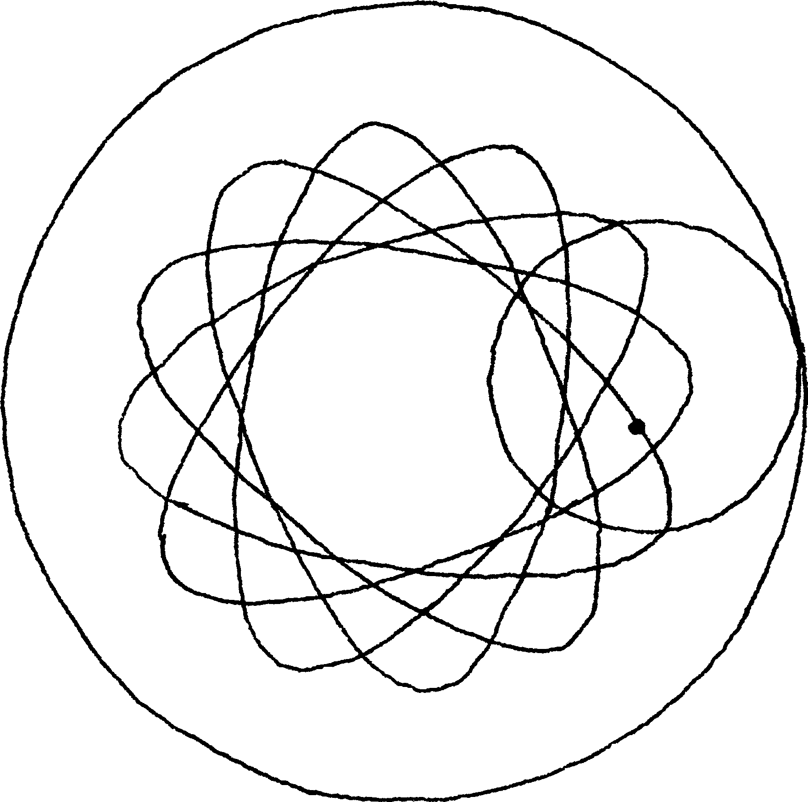
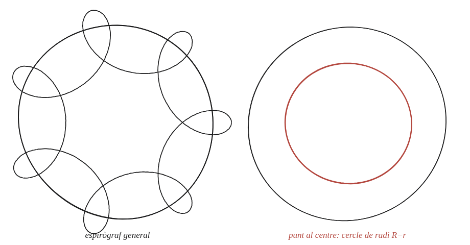

Què passa si el punt que traça la corba és al centre?

Què hem de produir
Una descripció de la corba degenerada —molt més senzilla que l'espirògraf general— que resulta quan el punt que es traça no és sobre la vora del cercle petit, sinó exactament al seu centre.
Separa els dos moviments
A l'espirògraf normal, el punt marcat gira al voltant del centre del cercle petit, i aquest centre alhora es mou al voltant del centre del cercle gran. Si el punt marcat és el centre del cercle petit, quin d'aquests dos moviments desapareix?
La construcció

Tancar-ho
Sense el gir addicional del punt sobre el cercle petit, el que queda és només el moviment del centre del cercle petit, que —com que rodola per dins del cercle gran mantenint sempre la mateixa distància R−r del centre comú— descriu simplement un cercle de radi R−r.
Si el punt que traça la corba és al centre del cercle petit, la corba resultant és simplement un cercle de radi R−r, centrat al centre comú.
Comprovació
R=5, r=2: el centre del cercle petit es manté sempre a distància 5−2=3 del centre, per a qualsevol angle de gir —comprovable calculant-ho a diversos instants i veient que el radi no canvia mai.
Aquest cas degenerat —tota la complexitat de l'espirògraf reduïda a un simple cercle— és el mateix tipus de simplificació que ja apareix quan un triangle es va "aixafant" fins a quedar pla: posar un paràmetre a un valor extrem (aquí, distància zero al centre) converteix una figura complicada en la més senzilla possible.